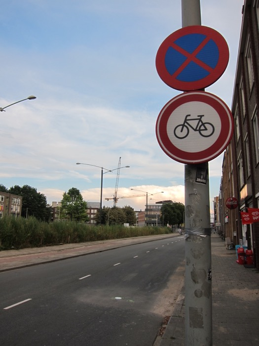
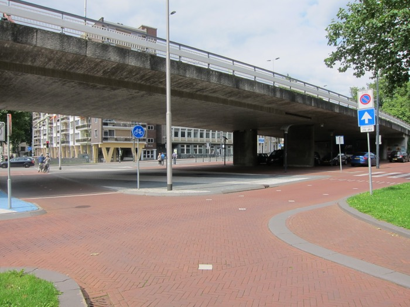
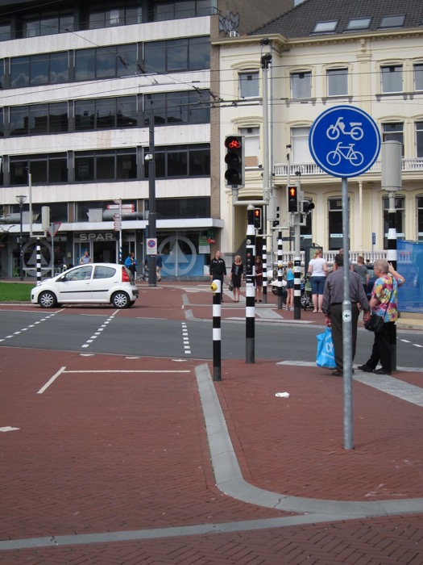
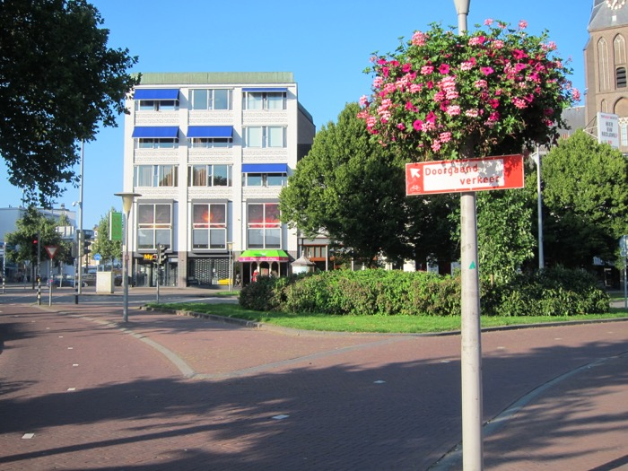
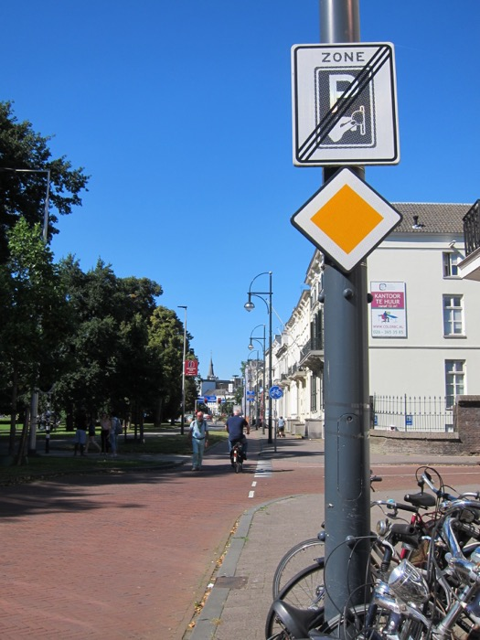
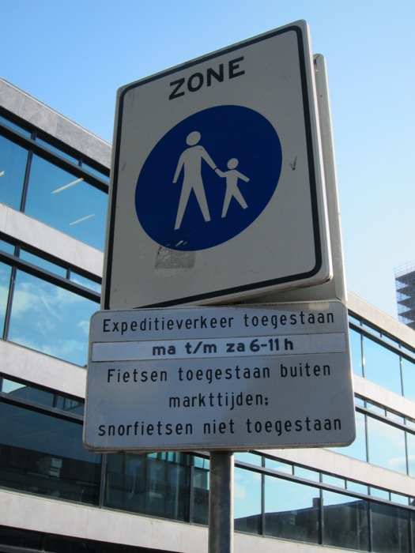

(While this page is already public, this page is not yet ready. It will probably be hosted somewhere else when this page is 'ready'. If you have reached here, welcome anyway!)
Cycling
No country in the world has better cycling infrastructure than the Netherlands (and Denmark). In the Netherlands, the vast majority of motorists are themselves cyclists; the Dutch motorist association, ANWB, started off as a cyclist club, and is still majorly involved in cycling issues. Looking out for cyclists is a prominent part of driver training in the Netherlands.
A wonderful blog in English is Bicycle Dutch. Other than texts, they also make many YouTube videos.
Bicycle sharing and hiring
There are many shops that tourists and other people can hire bicycles from.
One thing that is absent in the Netherlands is road-side bicycle hires. But then, that is not really needed in the Netherlands; people already have multiple bicycles parked at various train stations, or they ride all the way everywhere, or they have a folding bicycle that they take on trains, or something like that.
Even better than the city-based bicycle-sharing systems in foreign countires, is the national bicycle-sharing system in the Netherlands. OV-fiets is available at more than 250 locations nationwide (many have huge fleets). You have to become a member first before hiring an OV-fiets.
(Years ago there was a bicycle-sharing system in Amsterdam; far too many bicycles were stolen. Now OV-fiets operates in many places in Amsterdam, in watched locations.)
The Hoge Veluwe National Park in Gelderland Province is famours for its white bicycles. The park admission fee includes the usage of the white bicycles, you can ride them freely within the park, and there are bicycle stations at the entrances and at key locations within the park where you can pick one up or leave after your ride. (The bicycles cannot be reserved. The entire national park is fenced.)
In Belgium, there is the national Blue-Bike; they can be found at nearly 50 train stations nationwide. There are also the city-based Villo! in Brussels, Velo in Antwerp, and Li Bia Vélo in Namur. In Luxembourg City, there is vel'oh!. There are also many similar city-based systems in Germany and in France.
Bicycle helmets
In the Netherlands, bicycle helmets are usually only worn by young children, professional/'fast' cyclists, or foreign tourists. (I am not discouraging you; bicycle helmets save lives.)
A professional cyclist wearing helmet, and other cyclists not wearing helmet.
Netherlands has the second best bicycle safety record in Europe after Denmark (in terms of deaths per cycled distance; but then Denmark is also much less densely populated than the Netherlands). Instead of making bicycle helmets compulsory, the Dutch government makes the entire road system safer for cyclists. This is a little read (out of many other similar ones on the internet) about the (non-)usage of bicycle helmets in the Netherlands.
Bicycle path networks
Bicycle paths are ubiquitous. Amongst the dense network of bicycle paths is the fietsroutenetwerk 'bicycle route network', a.k.a. fietsknooppuntennetwerk 'bicycle junction network'. Important bicycle path junctions are given numbers, and the junction numbers are signposted along the routes of the network (see examples in the Dutch Wikipedia article, and photos below). The network was first built in northern Belgian Limburg, and now the network covers the entirety of Flanders and the Netherlands. The network extends into some bordering parts of Germany, and parts of Wallonia have joined. (Most prominently, Western part of Hainaut, and the East Cantons (Eupen-Malmédy). Parts of the provinces of Namur and Belgian Luxembourg have little networks that are not yet joined to the main network. See the Dutch Wikipedia article.) (Prominently absent from all this is the Brussels-Capital Region.) Many guidebooks and digitial guides give recommended scenic routes in strings of bicycle path junction numbers. There are numerous websites and apps that show the network, with some also allowing you to draw your own map by clicking/pressing the numbers of the junctions in the order that you want. This is one Dutch example with English, another Dutch example, another Dutch example, and a Belgian example.
Mostly-overlapping with the fietsroutenetwerk is the LF network; LF stands for landelijke fietsroute 'national bicycle route', or lange-afstand fietsroute 'long-distance bicycle route'. The LF network covers the whole European Netherlands and Flanders. The LF routes are signposted like the fietsroutenetwerk. The LF routes are recreation-oriented long distance bicycle routes (i.e. they are not necessarily the most direct route between urban centres). LF is followed by the route number (currently 1 to 51), and then an a or a b, which indicates the direction: a is generally from north to south, or west to east, while b is generally from south to north, or east to west. For instance, LF1 runs roughly along the western coast: LF1a indicates LF1 in the direction from Den Helder (Noord-Holland) in the north, to Boulogne-sur-Mer (France) in the south; LF1b indicates LF1 in the reverse south-to-north direction. The counterparts in nearby places are called RV (Rando-Vélo) in Wallonia, PC (pistes cyclables) in Luxembourg, and D-Route in Germany.
Bicycle direction signs with green writings: the circled numbers with an arrow indicate directions to the fietsknooppunten 'bicycle junctions'. U nadert het knooppunt 'You are approaching the junction', in this case it is referring to junction number 41. There are also the signs for the LF routes.This is junction number 41. There is a (not very big) information board about the local area (see below).This is the information board at junction number 41. It states that this is knooppunt 'junction' number 41 of the Veluwe fietsroutenetwerk 'bicycle route network'. It gives a map of (some of) the bicycle junctions in the wider area, the bicycle paths that link them, explanations on the bicycle route network system, and some touristic information.
Electronic bicycles
Remember that all parts of the Kingdom of the Netherlands, like the rest of Continental Europe, has right-hand traffic; traffic goes on the right hand side of the road/path. (Well, with bicycles, sometimes Dutch people rides creatively.) See also the page on driving for give way rules, which apply equally to cyclists (and moped-riders, etc.). This is some reading on cycling in the Netherlands.
The following are some signs and cycling-related words that you will see in the Netherlands. (The 'sign numbers' mentioned below, e.g. 'sign E2', are their ID numbers in Dutch traffic law.).
The two signs in the foreground on the right: top (sign E2) – no stopping; bottom, bicycle icon in white circle with red border (sign C14) – no entry for bicycles, and non-motorised handicap vehicles (in this direction; not shown clearly in this photo is the bikepath for the opposite direction on the left-hand side of the road).  Moped icon in white circle with red border (sign C13) – no entry for mopeds (both bromfietsen and snorfietsen; see below), and motorised handicap vehicles. These vehicles should go to the road on the right.Top (sign C2) – no entry, one way-street in the other direction; middle: uitgezonderd 'except' bicycles, i.e. (only) bicycles can enter; bottom (zone sign A1) – maximum speed 30 km/h zone; you (cyclist) are now entering a 30 zone.Blue rectangular sign on right with fietspad 'bicycle path' in white writing (sign G13) – non-compulsory bicycle path. (Compare this sign G13 with sign G11 in the following figure.) Signs in the middle, top, white inverted triangle with red border (sign B6) – give way. Underneath: bicycle traffic in two directions. Also notice the row of inverted triangles painted on the ground: they are called haaientanden 'shark's teeth' in Dutch, and is the equivalent of a give-way sign. Shark's teeth are also often found in intersections between bicycle paths.)Sign on the left, bicycle icon in blue circle (sign G11) – compulsory bicycle path. Bicycle paths are often paved with red bricks/painted with red-brick colour, but road surfaces with red bricks/red-brick colour are not necessarily bicycle paths, as in the street to the right (see the following figure).  Signs in the foreground: top (zone board sign E1) – you have entered a no parking zone (no kerbside parking), middle, white arrow to the top in blue square (sign C3) – one way street; bottom: uitgezonderd 'except' bicycles and mopeds. So this street is a two-way street for bicycles and mopeds, but a one-way street for other vehicles. Red bricks are often used for roads where the speak limit is low. The line of white bricks on each side of the road demarcates suggested bicycle lanes.Foreground, moped icon and bicycle icon in blue circle (sign G12a) – moped and bicycle path. At the end of this very short moped/bicycle path is a set of traffic lights with bicycle icons, just for this moped/bicycle path. They operate independently from the pedestrian lights to the right.  Bottom: Compulsory bicycle path in two directions (as indicated by the arrow).Compulsory bicycle path in one direction (in the direction indicated by the arrow).Rechtsaf voor fietsers vrij. Right-turn on red allowed for cyclists. So all traffic has to wait for green lights to proceed, except for cyclists turning right.Top, arrowed white signs with red writing and red border (signs K7) – direction signs for cyclists and moped riders. Station is train station, Centrum is city centre, Fietsenstalling is a bicycle garage (place to park bicycles), and the others are place names.Doorgaand verkeer 'Through traffic'. For through traffic, take the left bicycle path. The right bicycle path is for local traffic.  You are currently on a road for all traffic. Top: end of paid-and-display parking zone; bottom, yellow diamond with white border (sign B1): you are on a priority road, you do not need to give way to traffic coming in from a side street. (Further forward is a compulsory bicycle path; cars have to turn right.)
Moped-riders veer right into the moped/bicycle-path. (On moped/bicycle-paths, you may see an analogous sign with a bottom-left-pointing arrow; that means moped-riders leave the path and veer left into the main road.)  Bottom: Moped-riders veer right into the moped/bicycle-path. (On moped/bicycle-paths, you may see an analogous sign with a bottom-left-pointing arrow; that means moped-riders leave the path and veer left into the main road.) Adult and child icon in blue circle (zone sign G7) – footpath zone (pedestrian area). Underneath: Fietsen toegestaan als winkels gesloten zijn; snorfietsen niet toegestaan 'Cycling allowed if shops are closed; moped-riding not allowed'Underneath: Expeditieverkeer toegestaan ma t/m za 6-11h 'Delivery traffic allowed Mon–Sat 6am–11am' Fietsen toegestaan buiten markttijden; snorfietsen niet toegestaan 'Cycling allowed outside market times; moped-riding not allowed'  Hier geen fietsen plaatsen 'Do not place bicycles here'. (Geen is a negator.) In busier areas, many places put up such signs. In the Netherlands, one informally parked bicycle can easily become a crowd of parked bicycles that grows out of hand, and becomes a major obstacle to pedestrians.Fietsen stallen aan de overzijde 'Park bicycles on the opposite side'.verboden (brom-)fietsen te plaatsen m.u.v. in fietsrekken/aangewezen plaatsen 'Forbidden to place bicycles/mopeds, with exception of bicycle racks and designated places'.
also informally in Belgian Dutch: velo, velo's, velootje.
Frisian: fyts, fytsen, fytske. Rydwiele.
French: vélo, plural vélos.
Swiss German: Velo, plural Velos.
German: Fahrrad, plural Fahrräder.
to cycle (v.):
Dutch: fietsen.
Frisian: fytse.
French: faire du vélo 'to ride bicycle', aller en vélo à X 'to go by bicycle to X'.
German: Fahrrad fahren. Ich bin nach X geradelt. 'I rode to X'. In Southern Germany, radeln 'to cycle'.
Bicycle storage
Fietsenstalling is a bicycle parking garage/facility. There are public bicycle garages all around the country, most of them free. A bewaakte fietsenstalling is one that is watched by an attendent. Typically, when you enter with a bicycle, a ticket is attached to the bicycle, and a corresponding ticket is given to you. You then park your bicycle inside (you have to use your own bicycle lock). When you leave, you have to show the ticket, matching the ticket attached to the bicycle. The attendent will then take your ticket, and remove the ticket attached to the bicycle, and then you are free to go. There are other types of bicycle storage facilities. For example, see what NS has to say about the various types of bicycle storage facilities near train stations (most of them charge an acceptable amount of money; some require an OV-chipkaart). Some Fietsenstallingen do not allow overnight parking. Do not leave valuables with your bicycle, and invest in/borrow a heavy-duty bicycle lock: bicycle theft is a common occurrence in the Netherlands.
The entrance of a free guarded bicycle garage.
Bicycle carriage on public transport
See the carriage of bicycles on international trains (Germany usually requires you to have a bicycle cover), and on domestic trains. Carriage of bicycles on buses is generally not allowed in the Netherlands (unlike some buses in nearby Germany), unless it is a (small) folded-up folding bicycle. Try searching for fiets meenemen (bicycle along-take) on the websites of the individual public transport providers.
Bicycle roadside service and insurance
ANWB, other than providing roadside services for cars, also provides roadside services for bicycles (and also other types of vehicles).
You might also want to consider bicycle insurance, offered by ANWB and many insurance companies. With a huge number of bicycles, the Netherlands also has a problem with bicycle theft. Invest in, or borrow, heavy-duty bicycle lock(s). Make sure that you lock it properly.
Electronic bicycles
Electric bicycles are also popular (being frail or less fit is not an excuse for not cycling in the Netherlands). Public charging stations for electric bicycles are increasing seen. One electronic map of electric bicycle charging spots in the Netherlands, one in Flanders.
Other two/three wheeled vehicle
electric bicycles are considered bicycles, if they cannot go faster than 25 km/h. A driver's licence is not required for bicycles. (Rijksoverheid says so.)
there are two words that can be translated into English as 'moped'. The first is a bromfiets (or brommer). They have a registration plate with black writing and yellow background. They have a maximum speed of 45 km/h, and cylinder capacity of not more than 50cc, or electric motor with maximum net power of not more than 4kW. A class AM driver's licence is required.
snorfiets is legally a subtype of bromfiets. Snorfietsen have a registration plate with white writing and blue background. They have a maximum speed of 25 km/h
Registration plates of a bromfiets (proper) on the left, and snorfiets on the right (the registration plates are partially masked here). Bromfietsen and snorfietsen do not necessarily look like these.
See the second figure in this cyclist blogpost for a summary of rules for bromfietsen and snorfietsen.
a 'motorcycle' is a motorfiets. It has cylinder capacity of more than 50cc, or capable of speeds above 45 km/h. There are the driver's licence classes of A1, A2, and A. See what the European Union says on the classes of driver's lincence in the European Union. Motorcycles have 'normal' registration plates like cars (but the dimensions are different). Helmet and insurance are compulsory.